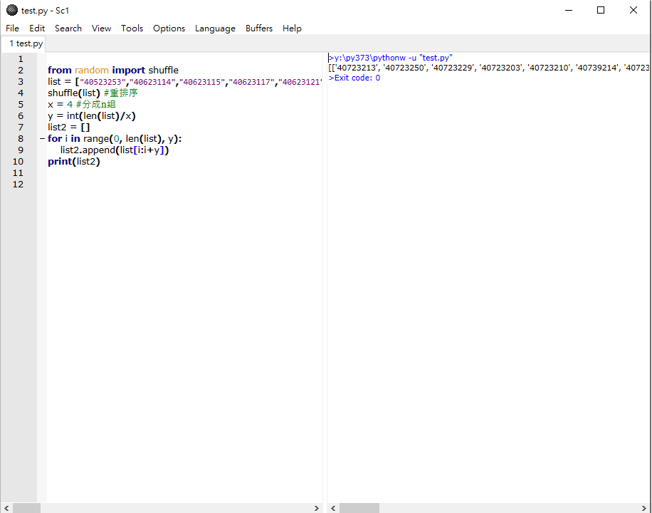
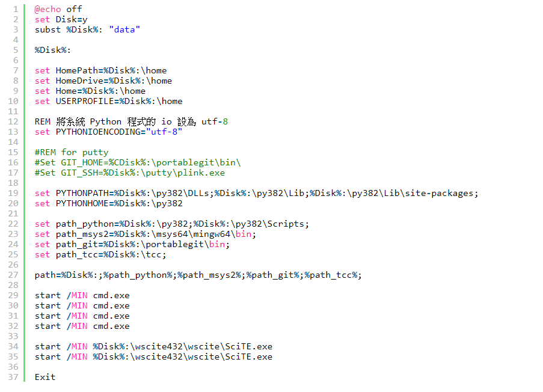
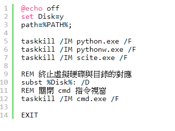
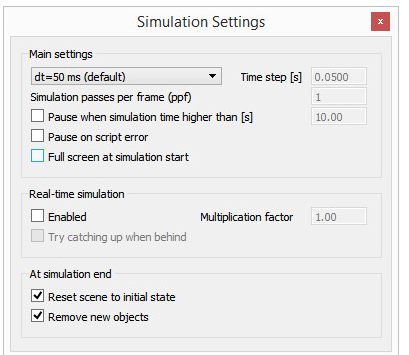

Assignment <<
Previous Next >> Assignment2
Assignment1
Random grouping
Can we write this program as an App and save the result to remote database?
要進行亂數分組，要利用到python的模組
1.Random從範圍中有統一的選擇。對於序列，存在隨機元素的統一選擇，用於生成列表的隨機劃分的函數，以及使用隨機抽樣而無需替換的函數。import random # 生成第一個隨機數print "random() : ", random.random()
參考文獻https://www.runoob.com/python/func-number-random.html
2.for循環可以遍歷任何序列的項目，如一個列表或一個字符串。 參考文獻https://www.runoob.com/python/python-for-loop.html3.shuffle方法将序列的所有元素随机排序import random
list = [20, 16, 10, 5]
random.shuffle(list)
print "隨機排列表 : ", list
random.shuffle(list)
print "隨機排列表 : ", list
參考文獻https://www.runoob.com/python/func-number-shuffle.html
3.Python len() 方法返回對象（字符，列表，元組等）的長度或項目個數
>>>str = "runoob" >>> len(str) # 字符串長度 6 >>> l = [1,2,3,4,5] >>> len(l) # 列表元素個數
參考文獻https://www.runoob.com/python/att-string-len.html
4.int內建型態(Built-in Types)可以在Python程式中直接使用, 不必預先import模組. 在 Python 中宣告變數後可直接指定一個特定值, 其變數型態自動設定為設定值的型態
# 宣告一個整數a=100print(a)print('型態:', type(a))print('-'*30)參考文獻https://www.runoob.com/python/python-func-int.html

Portable system
首先建立一資料夾cd2020，進去裡面建立data，並在data裡建立py382及wscite432、portablegit
去python的官網https://www.python.org/
並在下載區找到windows並選取Latest Python 3 Release - Python 3.8.2
找到Windows x86-64 executable installer並下載到py382裡
下載時將pip的選項取消
再去下載SciTE系統 full 64-bit download，並放到data裡的wscite432
建立start.bat

建立stop.bat

下載msys2-x86_64-20190524.exe 到data裡
下載64-bit Git for Windows Portable 至 portablegit裡
到https://bootstrap.pypa.io/get-pip.py頁面，安裝pip並另存新檔到data下
執行python get-pip.py和pip install flask bs4 lmxl pelican markdown flask_cors leo指令，將python3.8.2版本缺少的模組補齊
Four wheel car
BubbleRob tutorial
是在設計簡單的移動機器人BubbleRob，並在設計時嘗試介紹很多CoppeliaSim功能。教程將跨越許多不同的方面，因此請確保也看看其他教程，主要是有關構建仿真模型的教程。有建立模型，設置感測器，建立障礙物並測試其感測功能，讓其繞過障礙物，調整期使寸大小及物理屬性
Line following BubbleRob tutorial
旨在擴展BubbleRob的功能，以使其遵循的規則。確保您已經閱讀並理解了第一個BubbleRob教程。微調整其視覺感應器，並設置視覺回調函數，設置絕對坐標，構建機器人遵循的路徑
External controller tutorial
此教程說明好幾種方式能從外部控制機器人及模擬機器人，最方便的就是編寫程式碼直接附加到場景；您需要從外部應用程序，機器人或另一台計算機運行控制代碼，這是一種非常便捷的方法。這也使您可以使用與運行真實機器人完全相同的代碼來控制仿真或模型（例如虛擬機器人）
Simulation dialog

- 時間：模擬時間。每次執行主腳本時，仿真時間都會增加仿真時間步長。
- 每幀模擬遍數：一個渲染遍的模擬遍數。值為10表示刷新屏幕之前，主腳本已執行10次。如果您的圖形卡較慢，則可以選擇僅顯示兩幅中的一幅。
- 當仿真時間高於以下時間時暫停：允許指定暫停仿真的仿真時間。
- 腳本錯誤暫停：如果啟用，則在腳本錯誤發生時暫停仿真。
- 模擬開始時全屏：如果啟用，則模擬以全屏模式開始。
- 實時仿真，倍增係數：如果選擇，則仿真時間將嘗試跟隨實時。 X的乘數將使仿真運行比實時快X倍。
- 在落後時嘗試趕上 : 模擬時間將嘗試趕上損失的時間，從而明顯加快速度。
- 將場景重置為初始狀態 : 選中後，所有對像都將重置為其初始狀態
- 刪除新對象 : 選中後，在仿真運行期間添加的場景對象將在仿真結束時被刪除
Simulation
- 進行模擬測試是為了要確保機器能照理想狀態正常運作，或者測試機器的耐用性及安全性，其中也講解了在模擬過程可能會發生的狀況及解決方法，像是模擬速度調高或調慢，會造成不穩定或不準確的模擬。
Assignment <<
Previous Next >> Assignment2